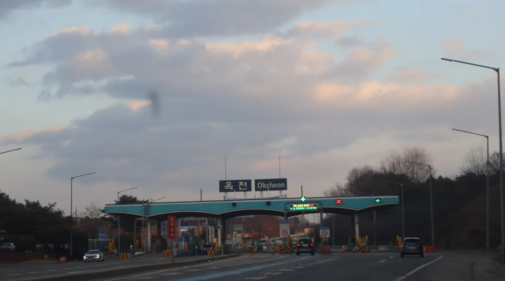
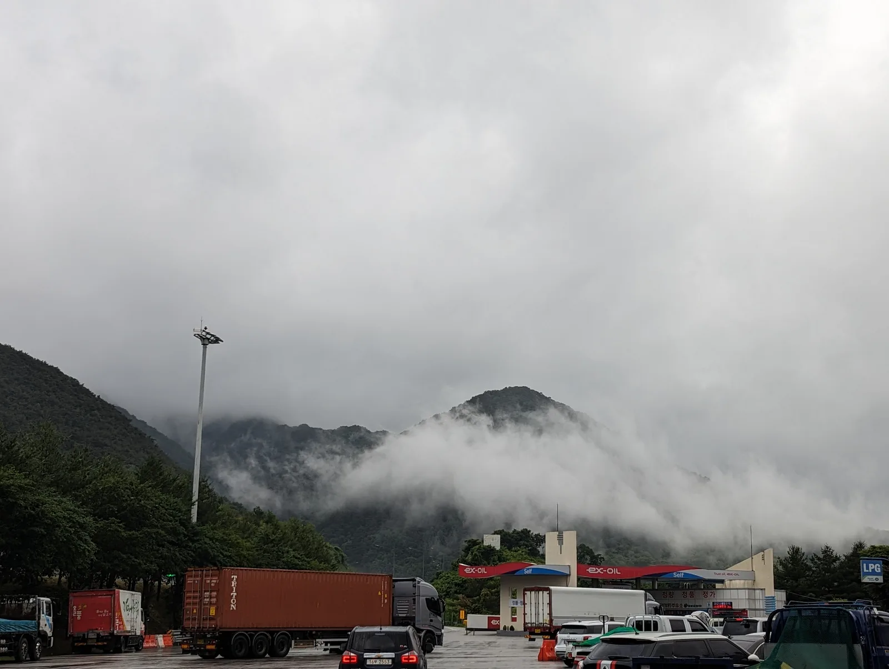
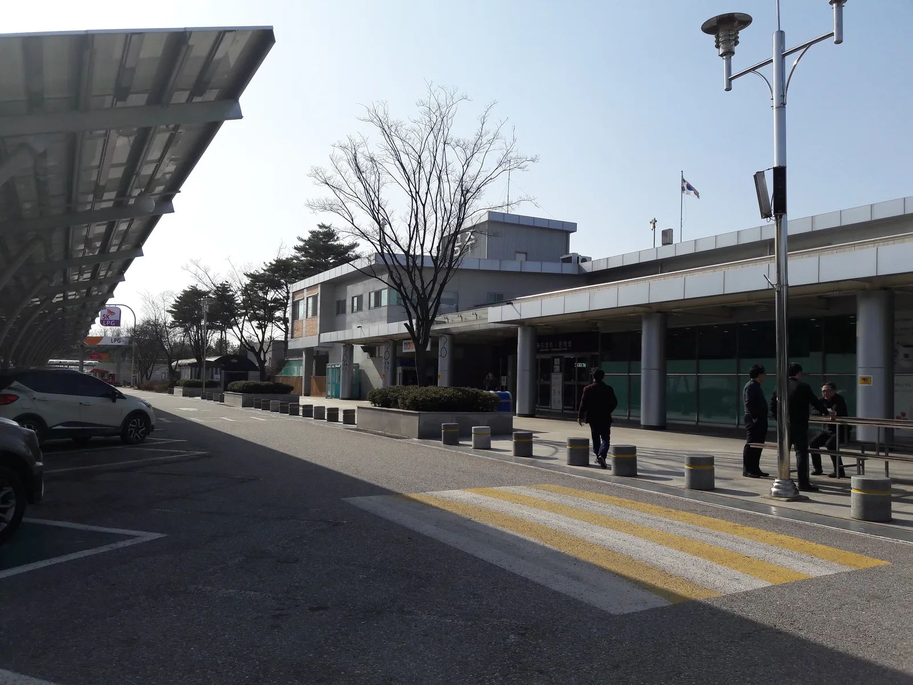

▲ 추석 연휴 나흘간은 전국 고속도로 요금소를 통행료 없이 통과할 수 있다 ⓒ Wikimedia Commons
2026년 추석 연휴, 고속도로를 타는 순간 통행료 걱정은 하지 않아도 된다. 국토교통부와 한국도로공사는 추석 연휴인 9월 24일부터 27일까지 나흘간 전국 고속도로 통행료를 전액 면제하기로 했다. 같은 기간 전기차 운전자에게는 또 하나의 혜택이 기다린다. 매일 낮 3시간, 공공 충전기 요금이 절반으로 내려간다.
다만 정확한 적용 시간과 대상, 한도를 모르고 출발하면 "분명 무료·반값이라고 들었는데" 하며 당황할 수 있다. 날짜와 시간, 대상 도로·충전기까지 확인해두자.
1. 고속도로 통행료, 정확히 언제부터 언제까지 무료인가
면제 기간은 9월 24일(목) 0시부터 9월 27일(일) 24시까지, 나흘간이다. 국토교통부와 한국도로공사가 매년 명절 연휴에 시행해온 통행료 면제 조치로, 2026년에도 그대로 이어진다. 대상은 한국도로공사가 관리하는 재정고속도로뿐 아니라 민자고속도로까지 포함한 전국 고속도로 전 구간이다.
📍 "1분이라도 걸치면" 무료 처리되는 이유
통행료 면제는 진입 시각이 아니라 통과(정산) 시각을 기준으로 판단한다. 즉 9월 23일 밤 11시 59분에 고속도로에 진입했더라도, 요금소를 통과하는 시점이 24일 0시를 넘겼다면 그 구간은 무료로 처리된다. 반대로 27일 24시를 살짝 넘겨 통과하면 일반 요금이 부과될 수 있으니 연휴 마지막 날 자정 전후로 이동한다면 시간을 여유 있게 잡는 것이 안전하다.
| 구분 | 내용 |
|---|---|
| 면제 기간 | 2026년 9월 24일(목) 00:00 ~ 9월 27일(일) 24:00 (4일간) |
| 대상 도로 | 전국 고속도로 — 한국도로공사 재정고속도로 + 민자고속도로 포함 |
| 적용 기준 | 통과(정산) 시각이 면제 기간 내에 걸치면 해당 구간 무료 |
| 이용 방법 | 하이패스·통행권 구분 없이 자동 적용, 별도 신청 불필요 |
| 부가 혜택 | 도로공사 재정고속도로 주유소 226곳, 유류(휘발유·경유) L당 100원 인하 |

▲ 통행료뿐 아니라 도로공사 주유소 유류비도 연휴 기간 리터당 100원 인하된다 ⓒ Wikimedia Commons
2. 지난해(2025년) 추석과 비교하면 무엇이 달라졌나
통행료 면제 '나흘간'이라는 틀 자체는 2025년과 같다. 2025년 추석 연휴에도 10월 4일 0시부터 10월 7일 24시까지 나흘간 전국 고속도로 통행료가 면제됐다. 다만 추석 날짜 자체가 해마다 음력 기준으로 바뀌기 때문에, 2026년에는 면제 기간이 9월 24~27일로 약 열흘가량 앞당겨졌다.
✅ 2025년 vs 2026년 추석 통행료 면제 비교
· 2025년 — 10월 4일(토) 0시 ~ 10월 7일(화) 24시, 나흘간 면제
· 2026년 — 9월 24일(목) 0시 ~ 9월 27일(일) 24시, 나흘간 면제
· 공통점 — 전국 고속도로(민자 포함) 전 구간 대상, 별도 신청 없이 자동 적용
· 차이점 — 2026년은 전기차 충전 반값 할인이 통행료 면제와 같은 기간에 처음으로 나란히 시행된다는 점이 새롭다
2026년 추석 고속도로 통행료 면제와 하이패스 이용 방법은 아래에서 자세히 확인할 수 있다. 통행료 면제·하이패스 이용법 바로가기
3. 전기차 충전 반값 할인 — 시간·장소·한도 정확히 보기
통행료 면제와 별도로, 2026년 추석에는 전기차 충전요금 할인이 새롭게 겹친다. 기후에너지환경부와 한국전력은 9월 24일부터 27일까지 매일 낮 11시부터 오후 2시까지 3시간, 공공 급속·완속 충전기 요금을 평시 대비 50% 할인한다.
| 충전기 등급 | 평시 요금(1kWh) | 할인 시간대 요금(1kWh) |
|---|---|---|
| 100~200kW급 | 348.4원 | 174.2원 (50% 할인) |
| 200kW 이상 | 393.1원 | 196.6원 (50% 할인) |
📍 할인 대상 충전기, 어디까지 포함되나
이번 할인은 기후에너지환경부와 한국전력이 운영하는 공공 전기차 충전기 약 1만8000기에 적용된다. 한국전력에서 직접 전기를 공급받는 자가소비용 충전기는 해당 시간대 전력량요금을 100% 할인받는다. 반면 민간 충전사업자가 운영하는 충전기는 회사별로 참여 여부와 할인 폭이 다르므로, 모든 충전소가 반값이 되는 것은 아니다. 출발 전 무공해차 통합누리집 등에서 이용하려는 충전소의 운영기관을 먼저 확인하는 것이 안전하다.

▲ 기후에너지환경부·한국전력이 운영하는 공공충전기가 할인 대상이다 ⓒ Wikimedia Commons
4. 휴게소 이동식 충전기 19기, 어디에 배치되나
귀성길 정체가 몰리는 휴게소에는 이동식 충전기까지 추가로 투입된다. 9월 23일부터 27일까지 전국 고속도로 휴게소 8곳에 이동식 충전기 총 19기가 배치되며, 차량 1대당 최대 20kWh 한도로 충전을 지원한다. 충전 대기가 몰릴 경우 배터리 잔량이 절반 이하인 차량부터 우선 충전하는 방식으로 운영된다.
✅ 이동식 충전기 배치 휴게소 8곳
· 하남드림휴게소(경기 방향)
· 홍천휴게소(서울 방향·양양 방향, 2개소)
· 춘천휴게소
· 구정휴게소
· 속리산휴게소
· 부여백제휴게소(서천 방향·공주 방향, 2개소)

▲ 귀성 차량이 몰리는 주요 휴게소에는 이동식 충전기가 한시적으로 추가 배치된다 ⓒ Wikimedia Commons
전국 전기차 충전 할인소 위치와 반값 충전소 찾는 방법은 아래에서 확인할 수 있다. 추석 전기차 충전 할인 정보 바로가기
5. 충전 인프라 현황 — 전국 누적 40만기 시대
이번 할인 정책이 통했다면, 그건 전기차 충전 인프라가 그만큼 늘어났기 때문이기도 하다. 국내 전기차 충전기는 2020년 3만4714기에서 2021년 9만4041기, 2022년 19만2948기, 2023년 28만8148기로 매년 급증했고, 이후로도 증가세가 이어지며 누적 40만기를 넘어선 것으로 파악된다.
📍 여전히 부족한 '급속' 충전기
충전기 총량은 늘었지만, 대부분은 밤새 천천히 충전하는 완속 충전기다. 귀성길처럼 짧은 시간에 많이 충전해야 하는 급속 충전기는 전기차 약 16대당 1기꼴로 여전히 수요를 따라가지 못한다는 지적이 나온다. 명절 연휴처럼 특정 시간대·구간에 전기차가 몰리면 대기 시간이 길어질 수 있는 이유다.
6. 귀성길 전기차 충전, 이렇게 준비하자
반값 할인 시간대에 맞춰 충전하려다 오히려 대기 줄이 길어질 수 있다. 몇 가지 원칙만 지키면 귀성길 충전 스트레스를 줄일 수 있다.
✅ 귀성길 전기차 충전 팁
· 출발 전 완충은 기본 — 집 근처 충전기에서 미리 100%에 가깝게 채워두고 출발
· 배터리 20~80% 구간 유지 — 장거리 이동 중에도 과방전·과충전을 피해야 배터리 부담이 적음
· 급속 충전 남용 자제 — 배터리 수명을 생각하면 필요한 만큼만 급속 충전하는 것이 유리
· 대체 충전 거점 미리 파악 — 고속도로 휴게소가 붐빌 경우를 대비해 나들목 인근 충전소를 미리 검색
· 무공해차 통합누리집 활용 — 출발 전 충전소 위치, 운영기관, 충전기 작동 상태를 확인하고 이동
7. 요약
2026년 추석 연휴 고속도로 통행료는 9월 24일 0시부터 27일 24시까지 나흘간 전국 고속도로(민자 포함)에서 전액 면제된다. 통과 시각이 면제 기간에 1분이라도 걸치면 무료로 처리되며, 도로공사 주유소 226곳의 유류비도 L당 100원 인하된다.
같은 기간 전기차 운전자는 매일 11시~14시, 기후에너지환경부·한국전력 공공충전기 약 1만8000기에서 50% 할인된 요금으로 충전할 수 있다. 휴게소 8곳에는 차량당 20kWh 한도의 이동식 충전기 19기가 추가 배치된다. 다만 민간 충전사업자 충전기는 할인 대상이 아닐 수 있으므로, 출발 전 충전소 운영기관을 확인하는 것이 좋다.
2025년 추석에도 같은 방식의 나흘간 통행료 면제가 있었지만, 전기차 충전 반값 할인이 통행료 면제와 같은 기간에 나란히 적용되는 것은 2026년이 처음이다. 전국 충전기가 누적 40만기를 넘어선 만큼, 미리 경로와 충전 계획을 세워두면 귀성길 부담을 크게 줄일 수 있다.